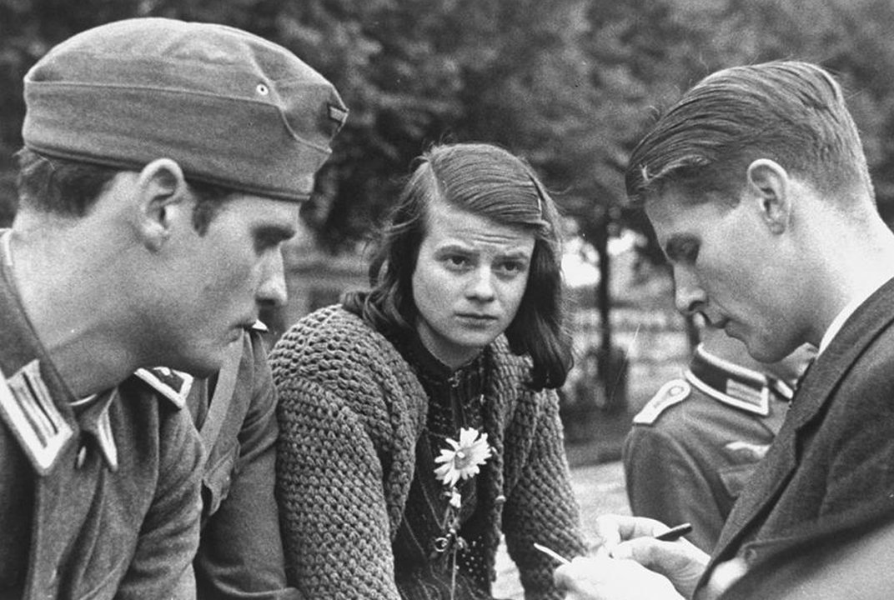
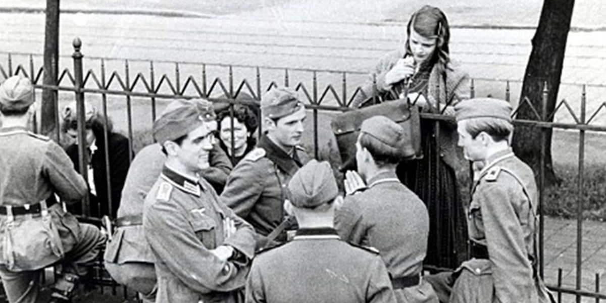
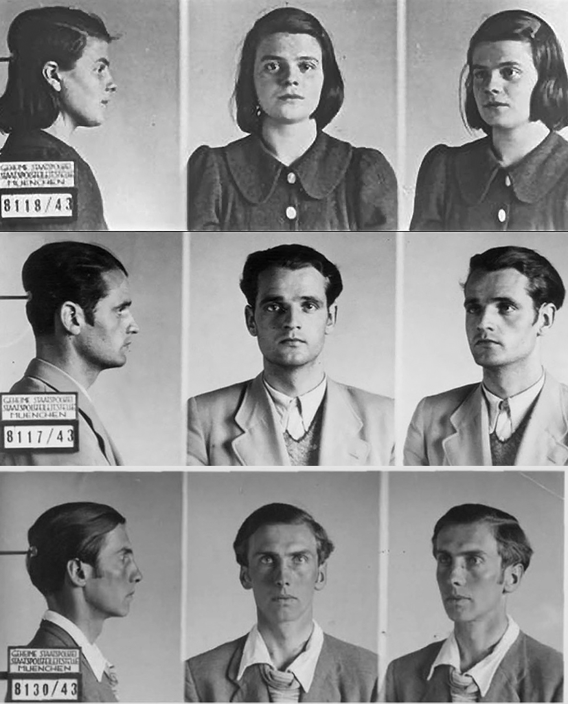

The White Rose Resistance: Student Dissent in Nazi Germany
Formed at the University of Munich in 1942, the White Rose was a nonviolent student and faculty resistance group that wrote, printed, and distributed anti-Nazi leaflets inside Germany at the height of World War II.
Munich Beginnings and Moral Awakening

By mid-1942, the Nazi regime controlled German media, universities, youth organizations, and public expression, making open opposition extraordinarily dangerous. Yet a small circle of students—initially centered around Hans Scholl and Alexander Schmorell—began meeting to discuss ethics, literature, philosophy, and the moral cost of silence under dictatorship.
Soon joined by Sophie Scholl, Willi Graf, Christoph Probst, and philosophy professor Kurt Huber, the group drew inspiration from classical writers, Christian ethics, and German humanist traditions that stood in sharp contrast to Nazi racial dogma and totalitarian conformity.
Several members had served in medical or military roles before returning to their studies in Munich, giving them firsthand exposure to the realities of war and occupation rather than abstract political theory.
Leaflets, Distribution, and Rising Danger

Between June 1942 and February 1943, the White Rose composed six distinct leaflets urging fellow Germans to think independently, question state propaganda, and reject complicity in tyranny and aggressive war.
Working quietly with a small duplicator, typewriters, stamps, and envelopes, members produced hundreds or thousands of copies and mailed or carried them to Munich, Augsburg, Stuttgart, Vienna, and other cities.
The final leaflet, written after the devastating German defeat at Stalingrad in early 1943, called on Germans to break free from regime control and recognize the human cost of continuing the war.
On February 18, 1943, Hans and Sophie Scholl brought remaining leaflets to the main atrium of the University of Munich, where a campus custodian spotted them and alerted authorities, leading to arrests across the circle within days.
Trials, Execution, and Enduring Memory

In late February 1943, the People's Court—chaired by Roland Freisler—conducted a rapid trial of Hans Scholl, Sophie Scholl, and Christoph Probst, sentencing all three to death, with executions carried out the same day.
Subsequent trials in April and July 1943 prosecuted Kurt Huber, Willi Graf, Alexander Schmorell, and other supporters and contacts who had helped print, transport, or shield the group's materials.
Although the White Rose had a small membership and did not overthrow the regime, its leaflets reached beyond Munich and became one of the best-known symbols of moral courage and civil resistance within wartime Germany.